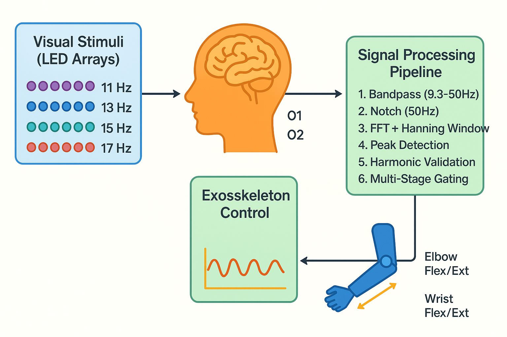

Complete System
// integrated BCI exoskeleton prototype

System Pipeline
// signal processing & control architecture
Empowering individuals with upper-limb motor impairments through SSVEP-based brain-computer interface technology. Full pipeline from EEG acquisition and spectral classification to embedded motor control.
// integrated BCI exoskeleton prototype

// signal processing & control architecture
This innovative project addresses the critical need for assistive technology for individuals suffering from upper-limb motor impairments due to stroke, spinal cord injuries, or neurodegenerative diseases. The system leverages Steady-State Visual Evoked Potential (SSVEP) technology to translate brain signals into precise mechanical movements.
By capturing EEG signals through a specialized headset and processing them in real-time, the exoskeleton enables users to perform voluntary arm movements using only their thoughts, significantly improving their quality of life and independence. Showcased at the IGNITE 2026 Exhibition at KDU — selected as 1 of 5 projects.
Uses external EEG headset for safe, comfortable brain signal acquisition without surgical intervention. Electrodes placed over the occipital cortex capture visual evoked potentials.
Leverages visual stimulation at specific frequencies (8–15 Hz) to generate reliable, distinct brain signals. LED arrays present stimuli that elicit measurable neural responses.
Processes brain signals and translates them into mechanical movements with minimal latency. Multi-threaded Python application handles simultaneous acquisition and control.
Adjustable exoskeleton structure accommodates different arm sizes and movement ranges. PID control ensures smooth, natural movement trajectories at key joints.
The system employs a multi-channel EEG headset positioned over the occipital cortex to capture visual evoked potentials. Raw EEG signals undergo bandpass filtering (5–50 Hz), artifact removal, and signal amplification to ensure clean data for analysis.
Visual stimuli are presented at carefully selected frequencies using LED arrays. When users focus on a specific stimulus, their brain generates a measurable electrical response at the corresponding frequency, which serves as the control signal.
Canonical Correlation Analysis (CCA) and Support Vector Machines (SVM) classify the processed EEG signals to determine user intent. The system achieves high accuracy by training on individual user patterns through a dedicated calibration protocol.
Decoded commands are transmitted to an Arduino microcontroller, which drives high-torque servo motors positioned at key joints — shoulder, elbow, and wrist. PID control algorithms ensure smooth, natural movement trajectories.
EEG signals are inherently noisy due to muscle artifacts and environmental interference. Implemented advanced filtering techniques and shielding to improve signal-to-noise ratio significantly.
Prolonged visual stimulation can cause eye strain. Optimized stimulus parameters and implemented break periods to maintain user comfort during extended use sessions.
Brain signals vary significantly between individuals. Developed a calibration protocol that personalizes the system to each user's unique neural patterns for reliable operation.
This project demonstrates the viability of brain-computer interfaces as practical assistive devices. Future developments include: